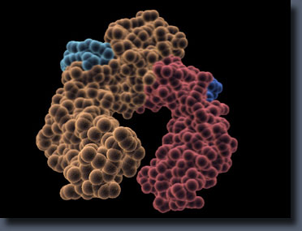
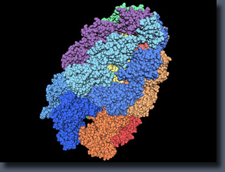
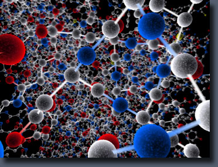
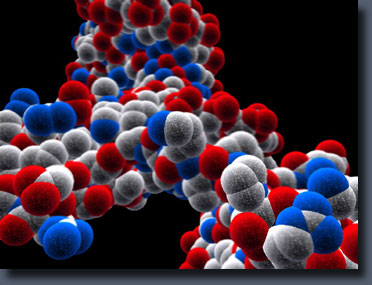
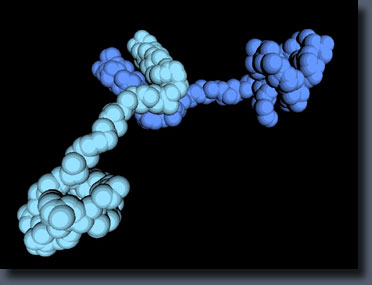
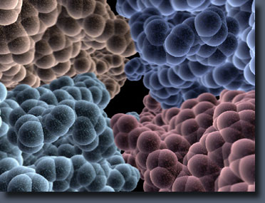
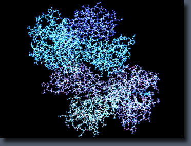
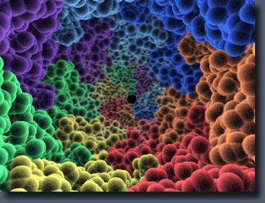
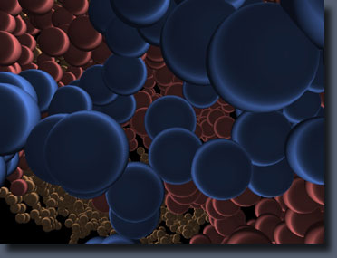
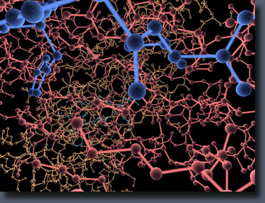

ProteinX
ProteinX is a molecular viewer that specializes in protein mutations and energy minimization of these mutations to find the lowest potential energy state to stabilize the protein's structure. It was the first freely available tool (release in 2006) that offers high resolution 3D images in real-time, and uses simulated annealing to perform energy minimization on amino acid residues within seconds.
ProteinX reads in molecular data in the popular PDB file format that can be downloaded from RCSB's Protein Data Bank.
Download
Version 0.91 of ProteinX has been released. Download from here.
ProteinX runs on Windows XP or higher and takes advantage of 3d hardware acceleration. Please read the Readme.txt included in the zip for more details and instructions on how to run ProteinX.
Tutorials
ProteinX uses a simple interface for a complex process, making it easy even for a novice user to learn how to use a molecular viewer. Here is a tutorial and a video to show what ProteinX can do, along with screenshots for each step:
Video
Gallery
|  | Protein 1DN2 with the organic shader and depth of field turned on, colored by chain. Atom size is set to large, and glow setting is at max. |
|  | Protein 1AON with the toon shader set to five shades, mode 1, colored by chain. Atom size is set to large, and there are 58,688 atoms that make up this protein. |
|  | Protein 1CD3 with the organic shader and depth of field turned on. Atom size is small, with glow set to max. |

|
Protein 1CD3 with the Cook-Torrance shader on mode 2. Atom size is normal. |
|  | Protein 1D66 with the organic shader and depth of field turned on. Atom size is large, with glow set to max. |
|  | Unknown protein (protein was deleted after this screenshot was taken) with the toon shader set to five shades, using mode 1, colored by chain. Atom size is large. |
|  | Center of protein 1F8R with the organic shader and depth of field turned on, colored by chain. Atom size is large, with glow set to medium. |
|  | Protein 1HSA with the energy field shader, colored by chain. Atom size is normal. |
|  | Protein 1AON with the organic shader and depth of field turned on, colored by chain. Atom size is set to large, and glow setting is at max. |
|  | Protein 1DN2 with the Cook-Torrance shader on mode 2, colored by chain. Atom size is medium. |
|  | Protein 1DN2 with the organic shader and depth of field turned off, colored by chain. Atom size is set to small, and glow setting is at max. |
{kind=link}
{kind=link}
{kind=link}
{kind=link}
{kind=link}
{kind=link}
{kind=link}
{kind=link}
{kind=link}
{kind=link}